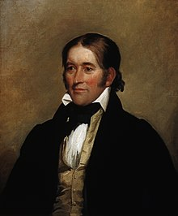
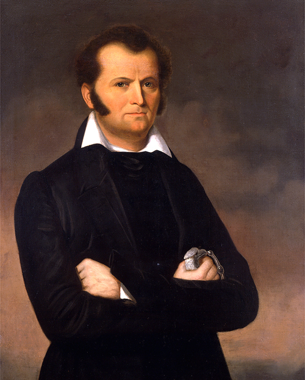

The Men Behind the Conspiracy

'King of the Wild Frontier' or 'King of the Hiding the Basement'?
He said to call him 'Buck', but we call him a liar!

Why is his knife so big? For digging basements, that's what we say!

Just like a 'Father of Texas' to keep the basement to himself.